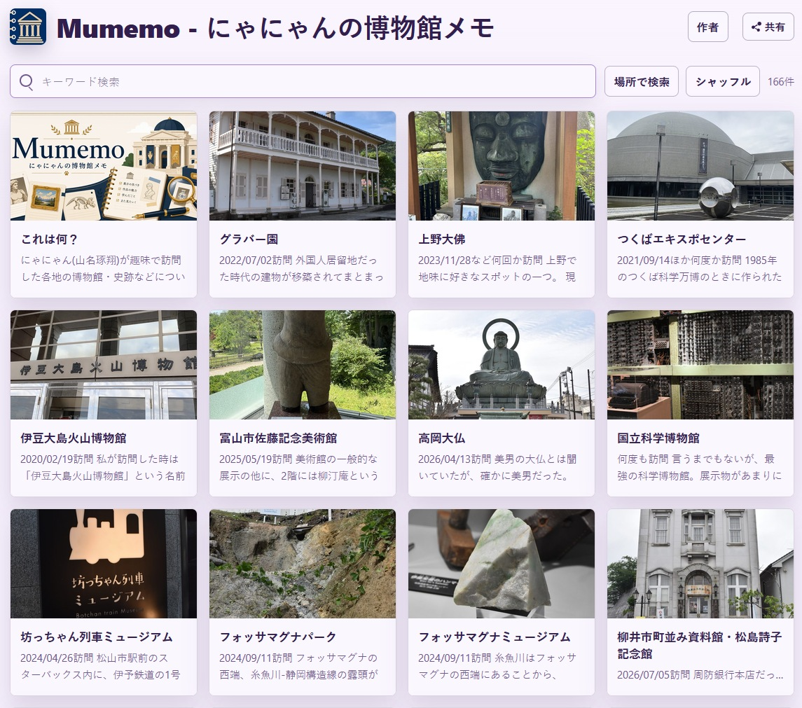
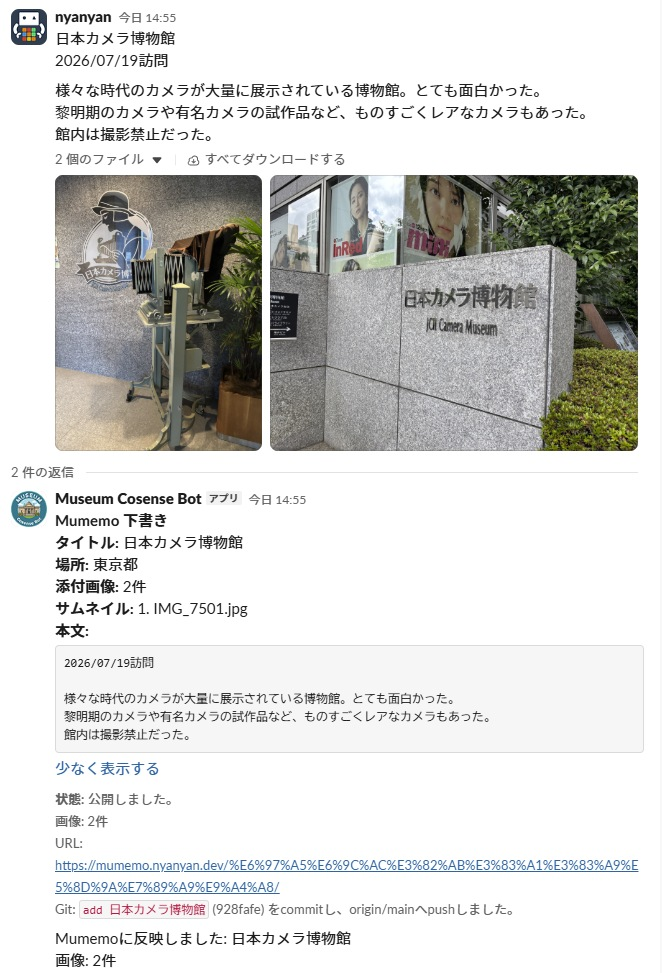

Nyanyan's Museum Notes (2026)
This website publishes photos and notes from museums I have visited as a hobby.
Website: https://mumemo.nyanyan.dev/
The website is integrated with Slack: when I post text to Slack, the content is reflected on the website. It also uses the OpenStreetMap API to automatically identify locations, making it possible to search by place.

